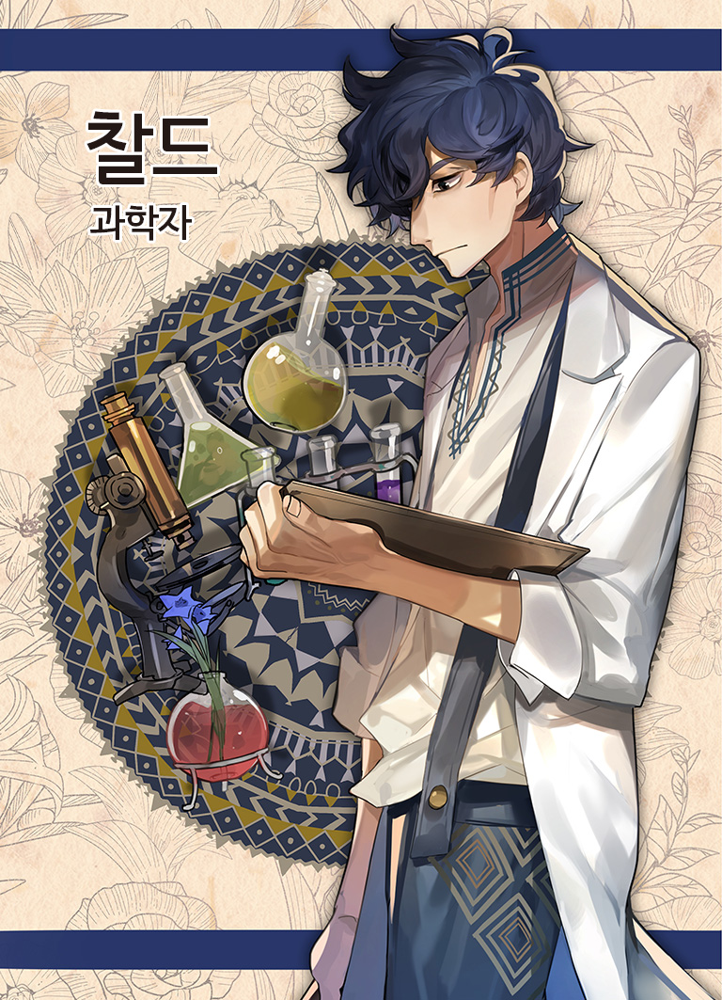

※ 하단의 내용은 찰드의 설정서입니다. 다른 등장인물의 설정서를 읽지 않도록 주의해주세요. 줄거리 여기는 할렐 마을. 하늘은 짙은 구름으로 뒤덮여 달빛조차 닿지 않는다. 그래서 밤에 밖을 돌아다니는 사람은 없으며, 마을 사람들은 모두 일찍 잠에 든다. 산속 깊은 곳에 위치한 이 마을은 옛날부터 외부와의 접촉이 제한되어 왔기 때문에, 마을 규모는 작지만 사람들은 서로를 믿고 의지하며 살아왔다. 하지만 30년 전, 이 마을의 모습은 순식간에 변해버렸다. 평화로웠던 이 마을에서 어떤 사건이 일어난 것이다. 사람들은 마을 사람 중에 범인이 있다고 생각했고 점차 의심과 불신에 빠져들었다. 이 상황을 해결하기 위해 탄생한 것이 「그림자 찾기」 제도이다. 「그림자 찾기」를 통해 토론으로 죄를 지은 자를 심판할 수 있게 되었다. 그로부터 30년의 세월이 흐르고, 보름달 빛이 마을을 비추는 어느 날 밤. 할렐 마을 촌장 로지가 의문의 죽음을 맞이하게 된다. 사건의 진상을 밝히기 위해, 그의 아들인 레이드가 용의자들을 한곳에 불러 모았다. 할렐 마을의 앞날이 어떻게 될지는 참가자들에 의해 결정된다. 바로 지금, 「그림자 찾기」가 시작된다.
등장 인물 정보 그림자 찾기 참가자 애쉬(32): 마을에서 대장장이를 하는 남성. 디다의 아버지인 잭과 절친한 친구였다. 호프라는 애완견과 살고 있다. 버니(30): 마을의 사서를 하는 여성. 마을의 추방자 벨과는 사이가 좋았다. 마을의 역사에 대해 자세히 알고 있으며 현재도 그에 관한 정보를 모으고 있다. 찰드(38): 마을의 과학자. 이 마을에서 추방 당한 벨의 전 남편. 원래는 이 마을 출신이 아니고, 도시 리바에서 온 것 같다. 디다(19): 잭과 제니스 사이에서 태어난 외동딸. 현재는 빵집을 하며 생활하고 있다. 이전 「그림자 찾기」에서는 어머니와 아버지가 엘리자에 의해 처형되었다. 부모님이 사라진 이후로는 우울해 보인다. 엘리자(28): 촌장 로지와 그의 아들 레이드를 모시는 여성. 원래는 이 마을 출신이 아니고, 도시 리바의 고아원에서 로지가 데려온 것 같다. 냉철하고 명령에 복종하며, 「그림자 찾기」의 규칙을 준수한다. 이전 「그림자 찾기」에서는 디다의 부모인 잭과 제니스를 처형했다. 포드(?): 이 마을에서는 보지 못한 얼굴이다. 레이드(36): 촌장 로지의 아들이며, 그를 보좌하고 있다. 이전 「그림자 찾기」의 진행자이기도 했다. 참가자 외의 인물 로지(57): 30년 전에 취임한 할렐마을의 촌장. 오래전부터 이 마을에서 살아왔으며 전 촌장의 측근이었다. 이멜다: 로지의 전 아내이며, 30년 전 사건에서 목숨을 잃었다. 과학에 관해 뛰어난 견해를 가지고 있었다고 한다. 잭: 디다의 아버지. 「자유의 보옥」 도난 사건의 범인으로 이전 「그림자 찾기」에서 엘리자에 의해 처형되었다. 제니스: 디다의 어머니. 「자유의 보옥」 도난 사건의 범인으로 이전 「그림자 찾기」에서 엘리자에 의해 처형되었다. 벨: 찰드의 전 아내. 외부인과 정보를 교환한 죄로 「그림자 찾기」를 통해 할렐마을에서 추방되었다.
그림자 찾기 규칙 · 일출과 함께 시작하고, 일몰과 함께 종료합니다. · 3차 토론의 종료 후 「투표의 의식」에서 범인 「그림자」를 투표용지에 적습니다. (투표용지를 사전에 준비해 주세요.) 이 결정은 어떤 이유가 있더라도 결코 번복되지 않습니다. · 촌장 또는 촌장의 친족이 진행자가 되어 「그림자 찾기」의 진행자가 됩니다. 단, 진행자는 진행만 할 뿐 토론에 개입할 수 없습니다. · 모든 참가자가 거짓말을 할 수 있습니다. · 스스로 범인임을 자백하는 행위는 금지입니다. · 각 플레이어는 자신의 목적 달성을 위해 최선을 다해야 합니다. · 시나리오의 배역에 몰입하여 역할을 즐겨주시기 바랍니다.
할렐 마을 지도
당신의 과거 [과학자로서, 인간으로서] 10년이 지난 지금도 그 미소를 잊을 수 없습니다. 과학자로서, 인간으로서, 저는 무엇을 했어야 했을까요? 그때의 기억은 아직도 선명하게 남아있습니다. 10년 전 아침, 평소와 같이 우리는 아침 식사를 하고 있었습니다. 「방금 뒷산에서 금괴를 찾았어. 찰드, 이걸로 우리는 엄청난 부자야.」 아내인 벨이 뜬금없는 말을 아무렇지 않게 합니다. 저는 시덥지 않은 농담이라고 생각했습니다. 벨은 신이 난 표정으로 계속해서 말합니다. 그 밝은 미소에 항상 위안을 받곤 합니다. 「이 두 팔을 벌린 정도의 크기였어. 정말 크기가 커서 내 허리까지 왔어. 뒷문까지 손수레로 가져왔어.」 벨은 두 팔을 크게 벌려 보이고, 그대로 자신의 허리 높이까지 손을 가져갔습니다. 저는 벨을 바라보며 미소 지으며 입을 엽니다. 「벨, 또 농담이지? 아침 식사를 준비할 테니 나중에 해줘.」 주방으로 시선을 돌리자 벨이 불쾌해하는 것은 보지 않아도 알 수 있습니다. 「거짓말 아니야. 왜 거짓말이라고 단정 짓는 거야! 과학자들은 모두 사람을 믿지 않는 거야?」 그 목소리는 화가 난 것처럼도 들렸습니다. 저는 작은 한숨을 쉬고 벨 쪽으로 돌아섭니다. 「그렇군... 금의 질량으로 추정하면, 두 팔 너비에 허리 정도의 높이라면 50톤은 훌쩍 넘을 거야. 무게만 놓고 보면 이 집보다 무거울 거야. 벨, 당신은 이 집을 손수레로 옮길 수 있어?」 제가 지적하자 벨은 난처한 표정을 지었습니다. 「또, 또! 기어코 내 거짓말을 밝히려고 하는 군. 그냥 넘어가 주는 게 상냥함이 아닐까?」 벨은 저를 책망하는 듯한 어조로 말합니다. 내 반응을 즐기고 있는 것 같습니다. 「알고 있잖아, 벨. 나는 그런 공감에 서투르다고.」 제가 그렇게 말하자 벨은 다시 웃습니다. 「언젠가는 당신을 놀라게 할 만한 거짓말을 해줄거야. 기대해!」 그렇게 말하고 벨은 기분 좋게 자리에 앉습니다. 언제나 변함없이 즐거워 보이는 미소입니다. 벨을 위해 마을에 남기로 한 것은 정말 잘한 일이라고 생각합니다. 저는 할렐마을 출신이 아닙니다. 이 마을에서 멀리 떨어진 도시인 리바에서 온 과학자입니다. 지금으로부터 약 20년 전의 일입니다. 이 지역의 풍토병인「히데리병」을 연구하기 위해 방문했습니다. 처음에는 1개월간의 단기 체류 예정이었습니다. 저는 할렐 마을과 그다지 관계가 없었지만 저의 할머니가 이 마을과 깊은 관련이 있다고 들었습니다. 「히데리병」은 100년 전쯤에 유행했던 기이한 병입니다. 아직 원인 불명인 이 병의 재발을 두려워하는 사람들이 많고 저도 흥미가 있어서 연구를 하게 되었습니다. 하지만 이 병은 지금도 원인이 밝혀지지 않았습니다. 「히데리병」 환자는 열과 두통이 나타나며 몸이 불타는 듯한 통증이 있다고 합니다. 어떤 문헌에 따르면 이 마을에 피는 약초가 특효약을 만들어낸다고 합니다. 하지만 그 약초는 이미 멸종했을지도 모릅니다. 결국 저는 지금도 찾지 못하고 있으니까요. 할렐 마을의 촌장인 로지는 처음에는 저의 체류를 거부했지만 최신 의학에 관한 정보를 마을에 제공하겠다고 제안하자 마을에 들어갈 수 있는 허가를 내주었습니다. 마을에 익숙하지 않은 저의 안내역을 맡은 것이 지금의 아내가 된 벨입니다. 그녀는 평소엔 사서를 하고 있지만, 특별히 마을 안내를 맡아주었습니다. 조금 거친 말투를 쓰지만, 속이 투명한 여성이라는 것이 첫인상이었습니다. 이 마을에 온 지 3주 정도 지났을 때, 저는 이 마을의 의심 많고 어두운 분위기에 진저리가 났습니다. 마을 사람들은 서로 대화를 하지만 누구나 속마음을 솔직하게 드러내지 못하는 분위기가 만연해 있기 때문입니다. 「있잖아, 벨. 이 마을 주민들은 모두가 서로를 믿지 않는 것 같아. 내가 이 마을에서 믿을 수 있는 건 너밖에 없어.」 제가 그렇게 말하자 벨은 웃었습니다. 「그렇게 말하는 당신도 나밖에 믿지 않는 거 아니야?」 「그건 확실히 그렇지만...」 저는 말문이 막혔습니다. 나 자신도 마찬가지로 그 중 한 명이었을지도 모릅니다. 제가 심각한 표정을 짓고 있자, 벨은 주위에 아무도 없는 것을 확인하고 내게 다가왔습니다. 그리고 아무도 듣지 못하게 내 귓가에 작은 목소리로 속삭였습니다. 아무래도 남들에게 들리고 싶지 않은 이야기인 것 같습니다. 「이 마을은 『그림자 찾기』라는 저주에 묶여 있어. 어떤 사건을 계기로 이 마을은 변해버렸어. 그래서 서로가 의심하게 된 거야.」 벨은 저에게 그 사건에 대해 이야기합니다. 현 촌장 로지의 아내인 이멜다는 전 촌장이 독을 먹여 목숨을 잃었습니다. 전 촌장은 자신에게 씌워진 살해 혐의를 부인하다가 그대로 스스로 목숨을 끊었습니다. 자신들 중에 사람을 죽이는 사람이 있다는 것을 알고, 마을 사람들은 서로의 속마음을 의심하게 되었다고 합니다. 그 이후로 이 마을은 어두운 분위기에 휩싸였다고 합니다. 벨은 이야기를 마치고 조금 어두운 표정을 지었지만 그 후 살짝 웃으며 계속 말했습니다. 「그래도 나는 이 마을 사람들을 믿어. 분명 속마음을 이야기해보면 모두가 같은 방향을 향하고 있다고 생각해.」 벨의 빛나는 눈은 그녀가 순수한 마음을 가진 사람이라는 증거였습니다. 「그럼 나도 속마음을 이야기해도 될까?」 저는 벨 쪽을 바라보았습니다. 아무에게도 들리지 않게 이야기하고 있었기 때문에 얼굴 거리가 가까웠습니다. 「속마음을 이야기하는 건 좋은 일이야, 찰드. 재미있는 이야기라면 더 좋겠지만. 자, 어떤 이야기일까나.」 벨은 호기심 어린 눈으로 이쪽을 바라봅니다. 뭔가 재미있는 이야기를 들을 수 있을 거라 기대하고 있는 걸까요. 하지만 저는 그저 생각하고 있는 것을 말할 수밖에 없었습니다. 「벨. 나는 당신을 사랑해. 당신을 위해서라면 이 마을에서 살아가는 것도 괜찮아. 나는 당신과 결혼하고 싶어.」 벨은 그대로 굳어버렸습니다. 항상 웃고 있어서인지 굳은 표정도 웃는 얼굴 그대로였습니다. 그 후 얼굴을 붉히며 저의 주변을 걸어 다닙니다. 「깜짝 놀랐어... 갑자기 결혼이라니... 게다가 아직 정식으로 사귀지도 않았는데...」 벨은 당황한듯 빠르게 말했습니다. 목소리에서도 당황한 기색이 전해집니다. 「미안해... 나는 이런거에 서툴러. 멋진 프로포즈의 말도 모르겠어. 그래도 나는 당신을 사랑해.」 저는 벨의 얼굴을 뚫어지게 바라봅니다. 그 얼굴은 더욱 붉어진 것 같았습니다. 잠시 후, 벨은 결심한 듯 이쪽을 바라봅니다. 「당신과 있으면 지루하지 않을 것 같아.」 그리고 벨은 잠시 간격을 두고 말했습니다. 「좋아, 결정했어. 찰드. 당신과 결혼할게!」 그녀의 기분 좋은 대답에 내 마음은 무척 설렜습니다. 그리고 이 마을에서 둘만의 생활이 시작되었습니다. 벨은 시시한 농담을 하는 것을 좋아하고 저는 그 농담을 듣는 것을 좋아했습니다. 「있잖아, 찰드. 우리에게 아이가 생기면 어떤 아이로 키우고 싶어?」 벨은 프라이팬에 계란 후라이를 만들면서 이쪽에 말을 걸어옵니다. 「음, 당신을 닮아 다른 사람을 배려할 줄 아는 아이였으면 좋겠네.」 저는 그렇게 벨에게 중얼거립니다. 그러자 벨의 얼굴에 미소가 번집니다. 「나는 찰드, 당신을 닮았으면 좋겠어. 소중한 누군가를 위해 위험을 무릅쓰고라도 행동할 수 있는 아이.」 나는 그런 사람이었던가. 벨의 입에서 나온 뜻밖의 말에 저는 조금 놀랐습니다. 「당신이 생각하는 것만큼 나는 훌륭한 사람이 아니야.」 제가 그렇게 말하자 벨은 저에게 미소를 지어보입니다. 벨은 줄곧 아이를 갖고 싶어 했습니다. 행복한 가정을 꿈꾸고 있었죠. 저도 아이를 갖는 것에 반대하지는 않았지만 벨과 둘이서 사는 생활만으로도 충분히 만족하고 있었습니다. 가능하다면 둘이서 계속 이 시간을 보내고 싶다고 생각했습니다. 아니, 아이가 태어난다면 셋이서 살게 되겠죠. 하지만 노크 소리와 함께 그 꿈은 산산조각 나고 말았습니다. 갑자기 집 문을 두드리는 소리가 났습니다. 이렇게 아침 일찍 누구일까 하고 문을 엽니다. 그곳에는 촌장의 아들 레이드가 서있었습니다. 「당신의 아내, 벨이 외부인과 비밀리에 접촉했다는 보고를 받았다. 내통 혐의로 『그림자 찾기』를 시작한다.」 레이드는 담담하게 사실을 알립니다. 「그림자 찾기」는 마을 사람들끼리 논의하여 범인을 결정하는 규칙입니다. 외부인과의 접촉은 이 마을에서 추방에 해당하는 죄입니다. 벨이 그런 짓을 할 리가 없다고 생각했지만, 그녀는 죄를 인정했습니다. 그녀는 「그림자 찾기」라는 제도에 의문을 가졌고 외부의 도시에서 그에 대한 자료를 찾아 가져왔다고 합니다. 벨은 저에게 계속해서 미안하다며 사과했고, 저는 그저 벨을 안아주며 괜찮다고 말해주었습니다. 「그림자 찾기」의 결과, 벨은 마을에서 추방되기로 결정되었습니다. 규칙을 어긴 것이니 추방되는 것은 규칙상으로는 맞습니다. 하지만 그 사실이 저에게는 그저 고통스러웠습니다. 저는 「그림자 찾기」 후에 마을을 떠나는 벨과 이야기를 나눴습니다. 벨은 아이를 갖고 싶어 했고 여러 번 노력했습니다. 하지만 그것은 지금까지 이루어지지 않았습니다. 그래서 외부 마을에서 새로운 남편을 찾기를 바랐습니다. 그리고 저는 이별의 말을 했습니다. 「벨, 헤어지자. 도시에 가면 다른 남자와 결혼해. 그게 분명 당신이 행복해지는 길 일거야.」 아마도 다음에 만날 때는 그녀는 아이를 가질 수 없는 나이가 되어 있을지도 모릅니다. 저는 그렇게 생각했습니다. 「그러는 것도 좋을지 모르겠네. 당신보다 잘생긴 사람이 있다면 그 사람과 결혼할게.」 벨은 조금 간격을 두고 말합니다. 「찰드, 당신과 있어서 행복했어. 지금까지 정말 고마워.」 평소와 같은 미소지만 어딘가 쓸쓸해 보였습니다. 저는 「나야말로 고마워.」라고 답합니다. 이제 이 미소를 볼 수 없다는 사실이 가슴에 무겁게 다가옵니다. 그녀의 모습이 뒤돌아 멀어집니다. 그리고 그녀는 동료인 버니와 잠시 무언가를 이야기했습니다. 이야기가 끝나자 그녀는 마을의 문을 나가 사라져버렸습니다. 저의 행복한 생활은 끝나버렸습니다. 그녀와는 10년이 지난 지금도 연락을 취할 수 없었습니다. 벨이 추방되고 반년 후, 이 마을에서 다시 큰 소동이 일어났습니다. 보름달 밤, 이 마을의 상징이 된 「자유의 보옥」이 도난당한 것입니다. 이는 사형에 해당하는 중죄입니다. 범인으로 선택된 것은 잭과 제니스 두 사람입니다. 두 사람은 이 마을에서 사이좋은 부부로, 디다라는 외동딸이 있었습니다. 그 두 사람은 결코 사건을 일으킬 것 같은 사람들은 아니었습니다. 사건 당일에는 불꽃놀이가 있었습니다. 책에서는 읽어본 적이 있었지만 실제로 본 것은 처음이었습니다. 촌장의 측근인 엘리자가 두 사람의 처형을 집행했습니다. 별로 대화를 나눠본 적은 없지만 냉철하고 정의감이 강한 여성이었습니다. 아직 20살도 되지 않았지만 스스로 나서서 이 역할을 맡았다고 합니다. 벨이 말하길, 이 마을 사람들의 속마음은 모두 같은 방향을 향하고 있다고 말했습니다. 그런 것은 환상입니다. 마치 농담 같은 이야기죠. 벨의 농담을 더 받아줄 수 있었으면 좋았을까요. 그랬다면 그녀를 더 행복하게 해줄 수 있었을까요. 계속 과학자라는 것을 핑계로 삼아왔던 건 아닐까요. 그토록 과학자로서 진실만을 추구해왔는데 마치 나의 마음에 거짓말을 하고 있는 것 같았습니다. - 당신의 과거 [과학자로서, 인간으로서] 끝. 실물 설정서로 이어집니다.